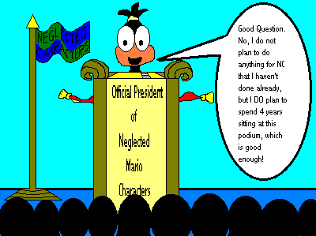
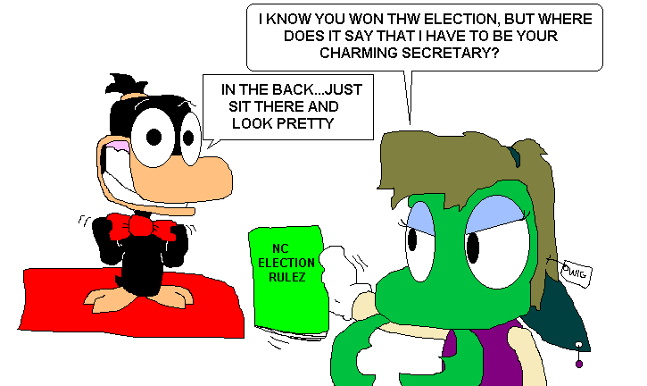
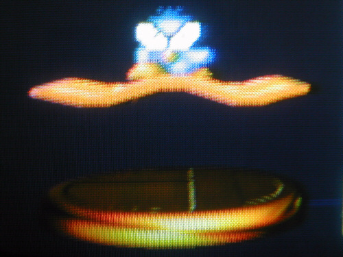
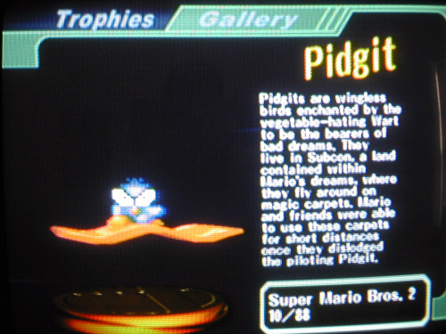
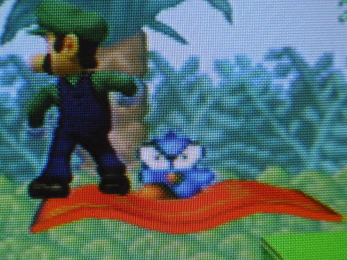
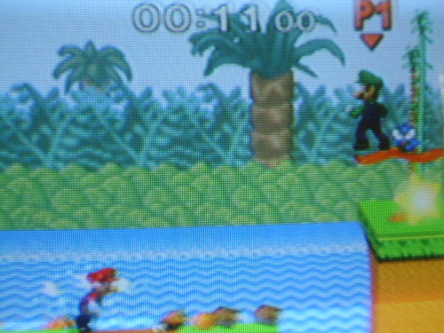

Well, Bill the Extra Guy made history here at NC by becoming the first ever NC President. He did so in the NC Election 2000, which ended sometime in October 2001. So what does a President of NC do? Well, we don't know yet. But if nothing else the President of NC needs his own page. So right here will go all of the stuff for our 1st President, Bill the Extra Guy. Oh yeah, and Vice President Kamek as well I guess. But mainly the President Bill. All of the official stuff involving his term in office (however long that is), will go here. I hope to develop this page once I get more ideas, but for now it'll be a shrine to Bill, our President. President Bill the Extra Guy's Page! President Bill the Extra Guy's Page!  President Bill in Super Smash Bros. Melee!(Taken with my digital camera. Not the best resolution.)    |
|
Go back to NC |